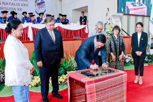

<!doctype html>
<html lang="en">
  <head>
    <title>Institut Teknologi Del</title>
    <meta charset="utf-8">
    <meta name="viewport" content="width=device-width, initial-scale=1, shrink-to-fit=no">

    <link href="https://fonts.googleapis.com/css?family=Playfair+Display:400,700,900|Rubik:300,400,700" rel="stylesheet">
    <link rel="stylesheet" href="css/bootstrap.css">
    <link rel="stylesheet" href="css/animate.css">
    <link rel="stylesheet" href="css/owl.carousel.min.css">
    <link rel="stylesheet" href="fonts/ionicons/css/ionicons.min.css">
    <link rel="stylesheet" href="fonts/fontawesome/css/font-awesome.min.css">
    <link rel="stylesheet" href="css/magnific-popup.css">
  </head>
  <body>

  </body>
  </html>
  <link rel="stylesheet" href="css/style.css">
  </head>
  <body>
    <header role="banner">
      <header>
        <nav class="navbar navbar-expand-lg navbar-light">
            <div class="container">
  
              <button class="navbar-toggler" type="button" data-toggle="collapse" data-target="#navbarsExample05"
              aria-controls="navbarsExample05" aria-expanded="false" aria-label="Toggle navigation">
              <span class="navbar-toggler-icon"></span>
          </button>
          <div class="collapse navbar-collapse navbar-light" id="navbarsExample05">
              <ul class="navbar-nav ml-auto pl-lg-5 pl-0">

                <li class="nav-item">
                  <a class="nav-link" href="Dasboard.html"><span>Dasboard</span></a>
              </li>

                  <li class="nav-item dropdown">
                    <a class="nav-link dropdown-toggle active" href="#" id="dropdown04" data-toggle="dropdown"
                        aria-haspopup="true" aria-expanded="false">Pengumuman</a>
                    <div class="dropdown-menu" aria-labelledby="dropdown04">
                        <a class="dropdown-item" href="rooms.html">Berita terbaru</a>
                        <a class="dropdown-item active" href="rooms.html">Kegiatan</a>
                        <a class="dropdown-item" href="rooms.html">FAKULTAS BIOTEKNOLOGI</a>
                        <a class="dropdown-item" href="rooms.html">FAKULTAS TEKNIK INDUSTRI</a>
                        <a class="dropdown-item" href="rooms.html">KALENDER PENDIDIKAN</a>
                        <a class="dropdown-item" href="rooms.html">BEASISWA INSTITUT TEKNOLOGI DEL</a>
                    </div>
                </li>
              </li>

                  <li>
                  <a class="nav-link" href="program pendidikan.html">Program Pendidikan</a>
                </li>

                  <li class="nav-item">
                      <a class="nav-link" href="Fasilitas.html">Fasilitas</a>
                  </li>

                  <li class="nav-item">
                      <a class="nav-link" href="Lembaga.html"><spa>Lembaga</span></a>
                  </li>

              </ul>
          </div>
      </div>
  </nav>
</header>
    <!-- END header -->

    <section class="site-hero site-hero-innerpage overlay" data-stellar-background-ratio="0.5" style="background-image: url(view.jpg);">
      <div class="container">
        <div class="row align-items-center site-hero-inner justify-content-center">
          <div class="col-md-12 text-center">

            <div class="mb-5 element-animate">
              <h1>Welcome to Institut Teknologi Del</h1>
              <p>one steap ahead</p>
            </div>

          </div>
        </div>
      </div>
    </section>
    <!-- END section -->

    <section class="site-section bg-light">
      <div class="container">
        
        <div class="row mb-5">
          <div class="col-md-4">
            <div class="post-entry">
              <a href="wisudawan.jpg"></a>
              <div class="body-text">
                <div class="category">Ber</div>
                <h3 class="mb-3"><a href="wisudawan.jpg">Wisuda 398 Lulusan Institut Teknologi Del</a></h3>
                <p class="mb-4">Pada Hari Sabtu 23 September 2023, Institut Teknologi Del melaksanakan Wisuda untuk 398 Mahasiswa Sarjana dan Diploma. Turut hadir 
                  Bapak Dr. Honoris Causa Ir. Airlangga Hartarto, MBA, MMT (Menteri Koordinator Bidang Perekonomian Republik Indonesia), Bapak Rionald Silaban 
                  (Direktorat Jendral Kekayaan Negara),  Bapak Jend. TNI (Purn.) Luhut Binsar Pandjaitan, M.P.A (Ketua Pembina Yayasan Del), Ibu Intan Simanjuntak 
                  (Ketua Pengurus Yayasan Del), dan tamu undangan lainnya. Kegiatan Wisuda ini dilaksanakan di Gedung Serba Guna Yayasan Del dengan tema “Fostering
                   Collaboration and Innovation towards Research Excellence”.</p>
              </div>
            </div>
          </div>
          <div class="col-md-4">
            <div class="post-entry">
              <a href="blog-single.html"></a>
              <div class="body-text">
                <p class="mb-4">Prof. Stella Cristie, Ph.d (Tsinghua University) dalam kesempatan ini memberikan Orasi Ilmiah kepada para Wisudawan. Beliau menyampaikan kepada para
                   wisudawan bahwa kehidupan selanjutnya adalah problem solving series yaitu fase yang harus dapat menganalisa atau memahami persoalan – persoalan yang ada serta bisa 
                   menyelesaikan persoalan tersebut secara sistematis dan sampai selesai. Karena setiap persoalan ataupun masalah pasti memiliki lebih dari satu jalan keluar. Terakhir beliau 
                   berpesan kepada wisudawan “Waktu anda memulai perkuliahan begitu bangganya anda bisa berkuliah di IT Del, sekarang IT Del yang bangga kepada kalian.”</p>
              </div>
            </div>
          </div>
          <div class="col-md-4">
            <div class="post-entry">
              <a href="blog-single.html"></a>
              <div class="body-text">
                <p class="mb-4">Sebagai Pembina Yayasan Del yang sangat mendukung dunia Pendidikan, Bapak Luhut Pandjaitan selalu berpesan kepada mahasiswa IT Del agar tidak hanya soal pintar 
                  tetapi juga dengan hati. “Selamat bertugas, permulaan dari suatu perjalanan yang panjang buat kalian yang telah menyelesaikan studinya di IT Del.” pesan Beliau.</p>
              </div>
            </div>
          </div>

          <div class="col-md-4">
            <div class="post-entry">
              <a href="blog-single.html"></a>
              <div class="body-text">
                <div class="category">Rooms</div>
                <p class="mb-4">Pada kegiatan ini juga berlangsung penandatanganan prasasti Laboratorium Keamanan Siber oleh Bapak Menteri Koordinator Bidang Perekonomian Dr. (H.C.) Ir. Airlangga Hartarto,
                   M.B.A., M.M.T dan Bapak Jend. TNI (Purn.) Luhut Binsar Pandjaitan, M.P.A (Ketua Pembina Yayasan Del). Besar harapannya dengan keberadaan Laboratorium ini dapat mendukung IT Del dalam menciptakan 
                   talent-talent baru dalam bidang keamanan siber di Indonesia.</p>
              </div>
            </div>
          </div>
          <div class="col-md-4">
            <div class="post-entry">
              <a href="blog-single.html"></a>
              <div class="body-text">
                <p class="mb-4">Pada kesempatan ini Menteri Koordinator Bidang Perekonomian Dr. (H.C.) Ir. Airlangga Hartarto, M.B.A., M.M.T, memberikan ucapan selamat kepada wisudawan dan menyampaikan 
                  bahwa wisuda adalah hari bersejarah karena setelah ini akan terjun ke masyarakat secara langsung. Dalam sambutannya beliau juga memaparkan terkait pertumbuhan ekonomi di Indonesia yang akan 
                  terus positif dan sudah termasuk ke dalam upper – middle income country, untuk itu diharapkan kedepannya alumni dari IT Del dapat berperan dalam pembangunan Indonesia menuju Indonesia Emas (Maju, Mandiri, Sejahtera).

                </p>
              </div>
            </div>
          </div>


          <footer class="site-footer">
            <div class="container">
              <div class="row mb-5">
                <div class="col-md-4">
                  <h3>CONTACT US</h3>
                  <p>Institut Teknologi Del
                    Jl. Sisingamangaraja, Sitoluama
                    Laguboti, Toba Samosir
                    Sumatera Utara, Indonesia
                    Kode Pos: 22381
                    Telp: +62 632 331234
                    Fax: +62 632 331116
                  </p>
                  <p class="lead"><a href="tel://">
                    Website: http://www.del.ac.id
                    Email: info@del.ac.id
                    Karir: karir@del.ac.id
                  </a></p>
                </div>
                <div class="col-md-4">
                  <h3>LATEST TWEETS</h3>
                  <p>No Twitter messages.</p>
                  <p>
                    <a href="#" class="pl-0 p-3"><span class="fa fa-facebook"></span></a>
                    <a href="#" class="p-3"><span class="fa fa-twitter"></span></a>
                    <a href="#" class="p-3"><span class="fa fa-instagram"></span></a>
                    <a href="#" class="p-3"><span class="fa fa-vimeo"></span></a>
                    <a href="#" class="p-3"><span class="fa fa-youtube-play"></span></a>
                  </p>
                </div>
                <div class="col-md-4">
                  <h3>Follow @institut_del</h3>
                  <p>FIND US ON</p>
                  <form action="#" class="subscribe">
                    <div class="form-group">
                      <button type="submit"><span class="ion-ios-arrow-thin-right"></span></button>
                      <input type="email" class="form-control" placeholder="Enter email">
                    </div>
                    
                  </form>
                </div>
              </div>
              <div class="row justify-content-center">
                <div class="col-md-7 text-center">
                  &copy; 
                  Facebook<i class="fa fa-heart-o" aria-hidden="true"></i> by <a href="https://colorlib.com" target="_blank">Twitter</a>                </div>
              </div>
            </div>
          </footer>
                    <div id="loader" class="show fullscreen"><svg class="circular" width="48px" height="48px"><circle class="path-bg" cx="24" cy="24" r="22" fill="none" stroke-width="4" stroke="#eeeeee"/><circle class="path" cx="24" cy="24" r="22" fill="none" stroke-width="4" stroke-miterlimit="10" stroke="#f4b214"/></svg></div>
      
          <script src="js/jquery-3.2.1.min.js"></script>
          <script src="js/jquery-migrate-3.0.0.js"></script>
          <script src="js/popper.min.js"></script>
          <script src="js/bootstrap.min.js"></script>
          <script src="js/owl.carousel.min.js"></script>
          <script src="js/jquery.waypoints.min.js"></script>
          <script src="js/jquery.stellar.min.js"></script>
      
          <script src="js/jquery.magnific-popup.min.js"></script>
          <script src="js/magnific-popup-options.js"></script>
      
          <script src="js/main.js"></script>
        </body>
      </html>